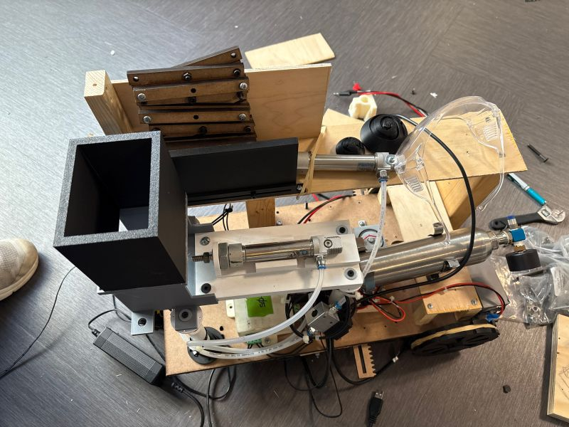

ME 2110 Competition Robot

In ME 2110, teams are assigned a project of creating a robot capable of accomplishing multiple tasks. Our team decided to design our robot after the massive Bewilderbeast shown in correlation with our competition theme: How to Train Your Dragon.
Our robot used two DC motors: one for a belt drive to move the robot and one to move a rack-and-pinion system to accomplish a task. We then used two pneumatic cylinders to do two more tasks, one of which was a scissor lift that I had partially designed. I enjoyed being mainly in charge of coding the Arduino, because I had successfully combined all the actuators and got to see our hard work paying off.
I learned a lot from working with a group of future engineers: most predominantly making and connecting subsystems, organizing workflow, and conflict design resolution. One of the biggest lessons I now understand and wish other people would is that failure isn’t wrong or bad. Failure is part of learning and you only truly fail if you don’t learn from your mistakes. I thoroughly enjoyed this class and can’t wait to see how it applies to real engineering roles in the future.